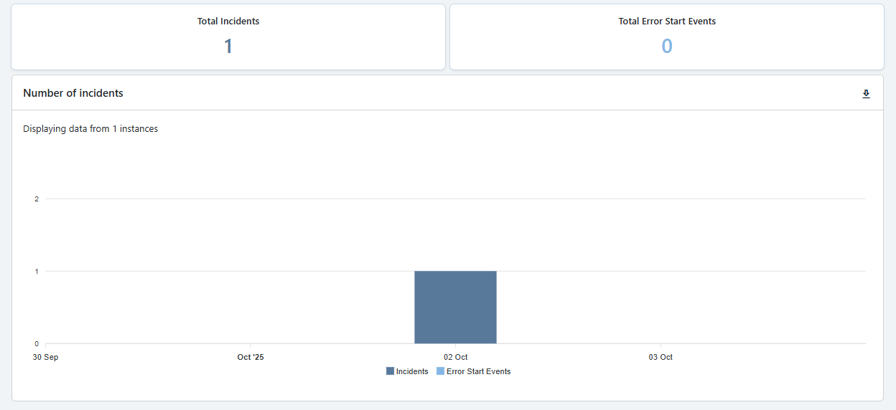
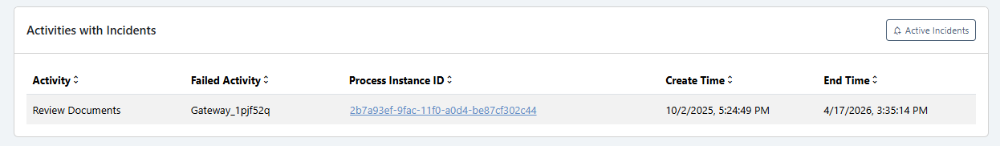
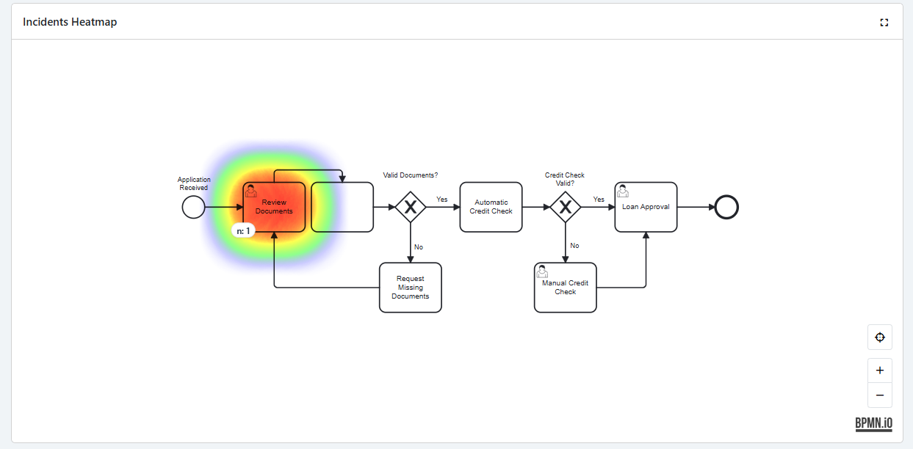
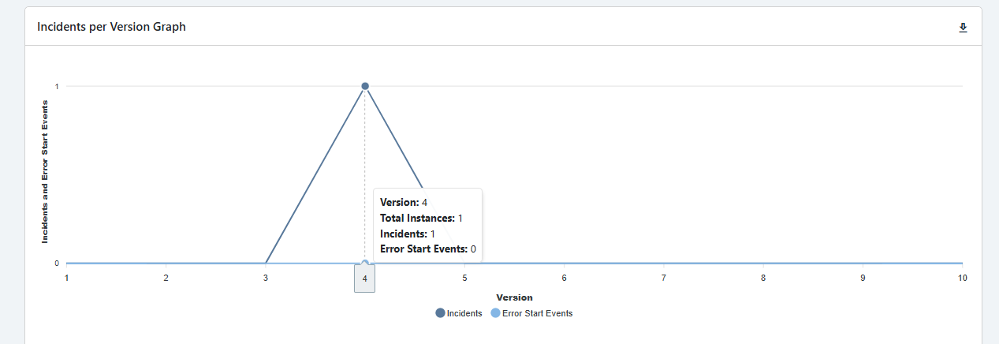

Process Analysis - Incidents
Process Analysis – Incidents
The Process Analysis – Incidents page in CIB ins7ght allows you to analyze incidents within a selected BPMN process.
It helps you identify when incidents occur, which activities are most affected, which failed activities triggered the incident, and how incident behavior changes across process versions.
This page is especially useful for detecting recurring process errors, identifying unstable BPMN activities, and supporting root-cause analysis by linking directly to the related case in CIB seven.
Page Navigation
You can analyze a specific process by selecting:
- Process Name: The process you wish to investigate.
- Process Version: The version of the process to analyze.
- Timeframe: The time interval over which data will be considered.
- Calendar: Select a specific time interval to be analyzed.
Once your selections are made, all visuals and metrics on the page will automatically adjust to reflect the chosen process, version and timeframe.
Key Metrics
The page highlights two main KPIs, which summarize overall process incidents and error start events:
- Total Incidents: Total number of incidents detected in the selected timeframe.
- Total Error Start Events: Number of error start events in the selected timeframe. An Error Start Event in CIB seven functions like a scoped BPMN exception handler (e.g.: “try catch”). It listens for propagated BpmnError events and, when triggered, interrupts the current execution flow to execute a predefined error handling path.
More global process KPIs can be found on the Global Overview page.
Number of Incidents
The Number of Incidents over time Graph shows how incidents evolve across time.
This graph displays:
- Incidents: The total number of incidents detected over time.
- Error Start Events: The number of error start events detected over time.

This visualization helps you:
- Identify incident peaks.
- Detect recurring error patterns.
- Understand whether incidents are increasing or decreasing over time.
- Compare general incidents against error start events.
This chart is useful for spotting operational instability and identifying time periods that require deeper investigation.
Activities with Incidents
The Activities with Incidents table shows which BPMN activities are most frequently involved in incidents, having in mind the Number of Incidents graph.
For each entry, the table displays:
- Activity: The BPMN activity where the process was located or returned to.
- Failed Activity: The specific activity that failed and triggered the incident.
- Incident Count: The number of incidents associated with the activity.
- Process instance ID: A direct link to the corresponding process instance instance in CIB seven for further technical investigation.
- Create Time: The creation time of the incident in question.
- End Time: The end time of the incident in question.

The distinction between Activity and Failed Activity is important because, in some cases, the process may return to a fallback activity after a failure.
The Failed Activity captures where the problem actually occurred, while the Activity shows where the process is currently positioned or where it continued after the failure. There might be cases on which an activity fails and it falls back into the previous one.
This section helps you:
- Identify the activities most responsible for incidents.
- Distinguish between fallback behavior and the real failure point.
- Navigate directly to CIB seven for deeper case-level analysis.
- Prioritize technical or BPMN model improvements.
Incidents Heatmap
The Incidents Heatmap provides a visual representation of incidents directly on the BPMN process model.
Activities with incidents are highlighted on the BPMN diagram, allowing you to quickly understand where errors are concentrated in the process.

The heatmap helps you:
- See which BPMN activities are affected by incidents.
- Identify incident hotspots in the process flow.
- Understand whether incidents are isolated or spread across multiple areas.
- Support process improvement by focusing on the most problematic activities.
A fullscreen button is also available to improve visualization for larger BPMN processes.
Error Start Events are excluded from the heatmap because they act as centralized BPMN error handlers. Highlighting them would always point to the same activity instead of showing where the incident actually originated.
Incidents per Version Graph
The Incidents per Version Graph compares the number of incidents across different process versions.

This graph is especially useful to:
- Compare incident frequency between process versions.
- Identify whether newer versions introduced more or fewer incidents.
- Detect regressions caused by BPMN model changes.
- Support version-based process improvement decisions.
By comparing incidents across versions, you can understand whether process changes improved stability or introduced new failure points.
Key Takeaways
The Process Analysis – Incidents page is designed to help you:
- Monitor incidents and error start events over time.
- Identify the BPMN activities with the highest number of incidents.
- Understand the difference between the current activity and the failed activity.
- Open related cases directly in CIB seven for deeper investigation.
- Visualize incident hotspots on the BPMN process model.
- Compare incident behavior across process versions.
- Support root-cause analysis and continuous process improvement.